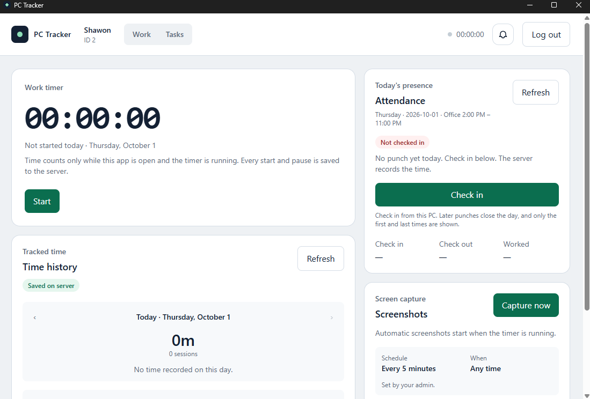
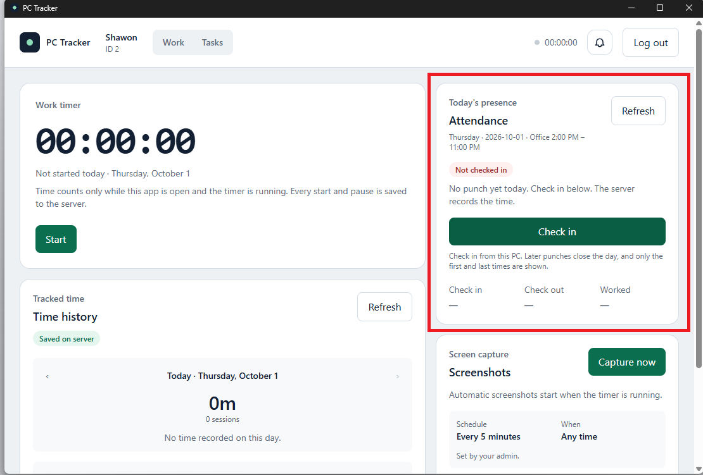
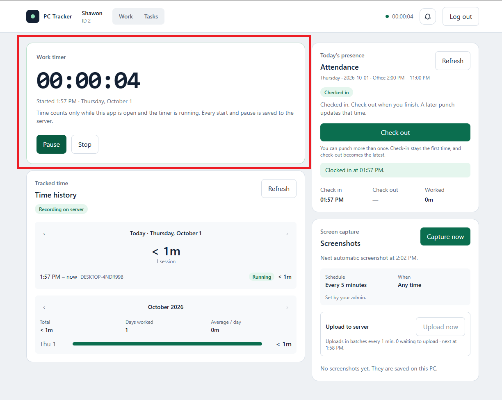
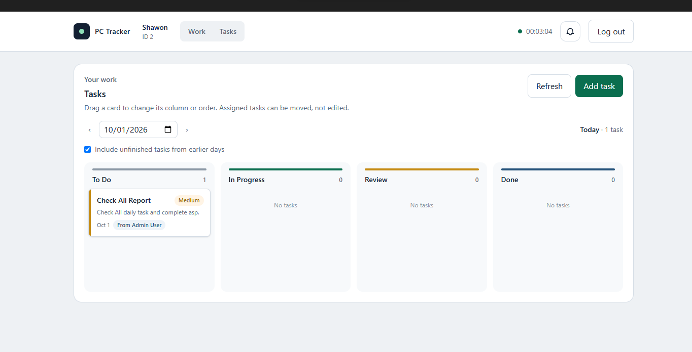
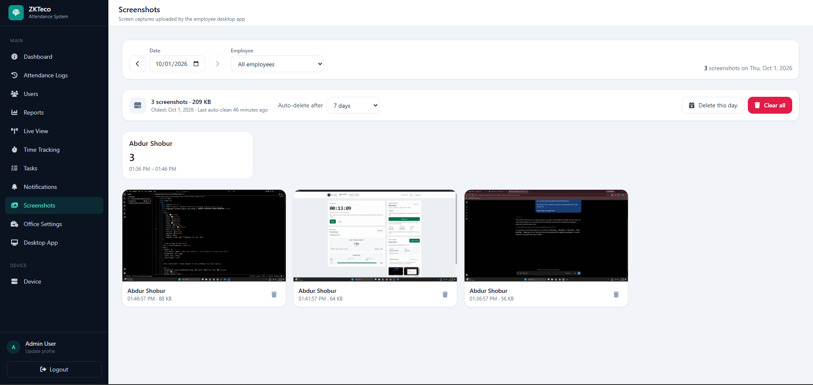
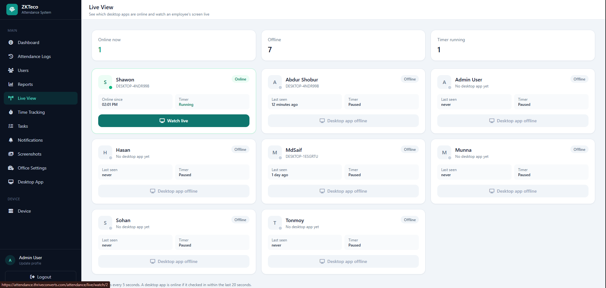
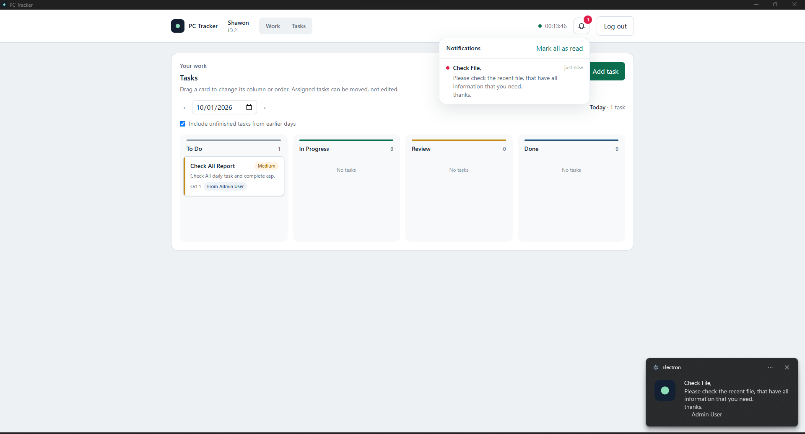

1
App Opens Automatically
পিসি চালু হলে অ্যাপ স্বয়ংক্রিয়ভাবে খুলবে
When you turn on your office PC, the software should open
automatically. Keep the app running during your work session.
অফিসের পিসি চালু করলে সফটওয়্যারটি স্বয়ংক্রিয়ভাবে খুলে যাওয়ার কথা।
কাজের সময় অ্যাপটি চালু রাখুন।
Tip: If it does not open, launch the software
manually from your PC.
টিপস: অ্যাপটি না খুললে পিসি থেকে ম্যানুয়ালি
সফটওয়্যারটি চালু করুন।

▣
Replace with Software Screenshot
এখানে সফটওয়্যারের আসল স্ক্রিনশট বসান
images/step-1.png
2
Confirm Attendance / Check In
উপস্থিতি নিশ্চিত করুন / চেক-ইন করুন
First, check whether your attendance is showing in the software. If
you already punched in using the biometric fingerprint machine but
the status is not visible, refresh the app. If needed, click
“Check In” in the software. You can also use
“Check Out” when leaving.
প্রথমে সফটওয়্যারে আপনার উপস্থিতি দেখাচ্ছে কি না যাচাই করুন।
বায়োমেট্রিক ফিঙ্গারপ্রিন্ট মেশিনে পাঞ্চ করার পরও উপস্থিতি না দেখালে
অ্যাপটি রিফ্রেশ করুন। প্রয়োজন হলে সফটওয়্যারের
“Check In” বাটনে ক্লিক করুন। অফিস ছাড়ার সময়
“Check Out” ব্যবহার করতে পারবেন।
Tip: Do not create a second check-in if biometric
attendance is already synced and visible.
টিপস: বায়োমেট্রিক উপস্থিতি সিঙ্ক হয়ে দেখালে আবার
আলাদা করে চেক-ইন করবেন না।

▣
Replace with Software Screenshot
এখানে সফটওয়্যারের আসল স্ক্রিনশট বসান
images/step-2.png
3
Start the Work Timer
ওয়ার্ক টাইমার চালু করুন
The Work Timer is an important part of your daily work record. After
confirming attendance, start the timer before beginning work. Keep
it running while you are actively working, and stop it when your
work session ends.
Work Timer আপনার দৈনিক কাজের রেকর্ডের গুরুত্বপূর্ণ অংশ। উপস্থিতি
নিশ্চিত করার পর কাজ শুরু করার আগে টাইমার চালু করুন। কাজ করার সময় এটি
চালু রাখুন এবং কাজ শেষ হলে টাইমার বন্ধ করুন।
Tip: Attendance and the Work Timer are separate.
Being checked in does not automatically mean your work timer has
started.
টিপস: Attendance এবং Work Timer আলাদা। Check In
করা থাকলেই Work Timer স্বয়ংক্রিয়ভাবে চালু হয়েছে—এমন নয়।

▣
Replace with Software Screenshot
এখানে সফটওয়্যারের আসল স্ক্রিনশট বসান
images/step-3.png
4
Check Your Tasks
আপনার টাস্কগুলো দেখুন
Open the Tasks section to find all work assigned to you. Review the
task details and status before starting. Use this section throughout
the day to stay focused on your assigned work.
Tasks সেকশনে আপনার জন্য নির্ধারিত সব কাজ পাওয়া যাবে। কাজ শুরু করার
আগে টাস্কের বিস্তারিত ও স্ট্যাটাস দেখে নিন। দিনের কাজ ঠিকভাবে অনুসরণ
করতে এই সেকশনটি নিয়মিত দেখুন।
Tip: If a task is missing or unclear, contact your
supervisor or admin.
টিপস: কোনো টাস্ক না থাকলে বা নির্দেশনা পরিষ্কার
না হলে সুপারভাইজার বা অ্যাডমিনের সাথে যোগাযোগ করুন।

▣
Replace with Software Screenshot
এখানে সফটওয়্যারের আসল স্ক্রিনশট বসান
images/step-4.png
4
Manage Your Tasks
আপনার টাস্ক ম্যানেজ করুন
Open the Tasks section to view all work assigned to you. You can
also create your own tasks, update task details, change the task
status, and keep your progress up to date throughout the day.
Tasks সেকশনে আপনার জন্য নির্ধারিত সব কাজ দেখতে পারবেন। পাশাপাশি আপনি
নিজের নতুন টাস্ক তৈরি করতে, টাস্কের তথ্য আপডেট করতে, স্ট্যাটাস
পরিবর্তন করতে এবং দিনের কাজের অগ্রগতি নিয়মিত আপডেট রাখতে পারবেন।
＋ Create Task
Create and add your own new task.
নিজের নতুন টাস্ক তৈরি করুন।
✎ Update Task
Edit task details, notes, priority, or deadline.
টাস্কের বিস্তারিত, নোট, অগ্রাধিকার বা সময়সীমা পরিবর্তন
করুন।
✓ Update Status
Change task status such as Pending, In Progress, or
Completed.
Pending, In Progress অথবা Completed হিসেবে টাস্কের স্ট্যাটাস
পরিবর্তন করুন।
Tip:
Keep your task status updated so your supervisor can easily track
work progress. If an assigned task is missing or unclear, contact
your supervisor or admin.
টিপস:
আপনার কাজের অগ্রগতি সহজে বোঝার জন্য টাস্কের স্ট্যাটাস নিয়মিত আপডেট
রাখুন। কোনো নির্ধারিত টাস্ক না থাকলে বা নির্দেশনা পরিষ্কার না হলে
সুপারভাইজার বা অ্যাডমিনের সাথে যোগাযোগ করুন।
▣
Replace with Software Screenshot
এখানে সফটওয়্যারের আসল স্ক্রিনশট বসান
images/step-4.png
5
Automatic Screenshots
স্বয়ংক্রিয় স্ক্রিনশট
During an active work session, the software may automatically
capture screenshots for work activity records. This is automatic;
you do not need to click or configure anything.
কাজের সক্রিয় সেশনের সময় সফটওয়্যার কাজের কার্যক্রমের রেকর্ডের জন্য
স্বয়ংক্রিয়ভাবে স্ক্রিনশট নিতে পারে। এটি স্বয়ংক্রিয়—আপনাকে কোনো বাটনে
ক্লিক বা সেটিং পরিবর্তন করতে হবে না।
Tip: Keep only work-related content open on the
office PC during active work time.
টিপস: সক্রিয় কাজের সময় অফিসের পিসিতে শুধুমাত্র
কাজ-সম্পর্কিত কনটেন্ট খোলা রাখুন।

▣
Replace with Software Screenshot
এখানে সফটওয়্যারের আসল স্ক্রিনশট বসান
images/step-5.png
6
Admin Live View
অ্যাডমিন লাইভ ভিউ
When enabled by the organization, authorized admins may use the
software’s live-view function during an active work session for work
monitoring and support. No employee action is required for this
feature.
প্রতিষ্ঠান কর্তৃক চালু থাকলে, অনুমোদিত অ্যাডমিন সক্রিয় কাজের সেশনে
কাজ পর্যবেক্ষণ ও সহায়তার জন্য সফটওয়্যারের Live View ফিচার ব্যবহার
করতে পারেন। এই ফিচারের জন্য কর্মীর কোনো আলাদা পদক্ষেপ প্রয়োজন নেই।
Tip: Use the office computer according to your
organization’s work and privacy policies.
টিপস: অফিসের কম্পিউটার প্রতিষ্ঠানের কাজ ও
গোপনীয়তা নীতিমালা অনুযায়ী ব্যবহার করুন।

▣
Replace with Software Screenshot
এখানে সফটওয়্যারের আসল স্ক্রিনশট বসান
images/step-6.png
7
Check Notifications
নোটিফিকেশন চেক করুন
Please check the software notifications regularly during your work
session. Notifications may contain important updates, reminders,
warnings, or actions that require your attention.
কাজের সময় নিয়মিত সফটওয়্যারের নোটিফিকেশন চেক করুন। নোটিফিকেশনে
গুরুত্বপূর্ণ আপডেট, রিমাইন্ডার, সতর্কতা অথবা আপনার করণীয় কোনো
নির্দেশনা থাকতে পারে।
Tip: If you see a new notification, open it and
check whether any action is required.
টিপস: নতুন নোটিফিকেশন দেখলে সেটি খুলে দেখুন কোনো
পদক্ষেপ নেওয়া প্রয়োজন কি না।

▣
Replace with Notification Screenshot
এখানে নোটিফিকেশন স্ক্রিনশট বসান
images/step-7.png